Dark · the token today
Downloadborder #808080
Session 313 · review page · What tonight asked you
Twenty-five calls. Most need one click. Four more questions already have their own page tonight; they are linked, not repeated.
At a glance · every call and its recommendation
One row per call, in page order. The answer column fills as you click. Each row jumps to its call.
| # | The call | Recommended | Your answer |
|---|
Other pages waiting for you · four · not repeated here
04–06 · The ink in dark · three calls
Two lanes asked the same first question in different words. The light border was moved tonight; the dark border was not, because your answer was given on a light picture. The roundels were moved in eighteen parts; two success marks were not reached. And the Mono rule, if built as picked, would reach three other themes.
In light the outline button's border now takes the ink in every theme. In dark the border token is still a mid grey, while the dark ink is the soft white beside it, and the outline button itself already paints its dark border pure white. Three colours for one edge. Drawn in this page from the hex values, Mono dark.
Dark · the token today
Downloadborder #808080
Dark · as the button paints it
Downloadborder #FFFFFF
Dark · the ink
Downloadborder #E1E1E1
Does "the border follows the ink" reach the dark border, so a button's border and label are one colour in both modes?
Recommended: yes. The same rule in both modes, and it ends the fork between the token's grey and the button's white.
Error, warning and information marks in dark now take the soft white. Two success marks were left: the big tick's roundel on the confirmation page is still pure white, and the small success message's mark stays green, because a later rule outranks the dark one and it was never white to begin with. Cloud render of the confirmation page, dark, fallback face.
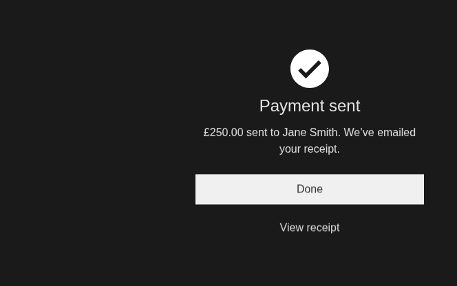
Does the ink reach the success marks too: the big tick on the confirmation page, and the small success message's mark?
Recommended: both follow the ink. Success is the fourth status, and your ruling named the roundels without an exception.
The Mono pick for the notifications family binds the bar's warning text to the status mark. Legacy, Console and Supercharge share that rule, and their warning mark is pure black, so their warning text would go from dark grey to black with it. This only arises once the notifications family is built, which waits on the third red. Drawn in the page from the hex values.
Legacy, Console, Supercharge · today
Your session ends in two minutes
text #333333 on #FFBB33
The same · taking their warning mark
Your session ends in two minutes
text #000000 on #FFBB33
When the notifications bar takes the ink in Mono, do Legacy, Console and Supercharge keep their dark grey warning text by a guard, or take their own theme's warning mark, black?
Recommended: keep their text by a guard. A Mono rule should not repaint three other themes; each theme keeps its own paint.
notes/_subreports/2026-10-01-313-B5b-fork-picks.md), lane AC4's "Left for Dave" line and P-plan § 4. Ruling s313-D39 read with s176-D1; tertiary/border/default light now takes {text.default}; its dark leg is #808080 in Mono, Console and Legacy and #524842 in Supercharge; the dark ink is #E1E1E1 (#F7F6F4 in Supercharge); the outline button's dark border is #FFFFFF. Row W-313bq (B5b's W-313b5q, renumbered by the committer).notes/_subreports/2026-10-01-313-B7.md). Ruling s313-D35 (21 rules moved, 18 snippets). The success message's .is-ok .ic{color:var(--success)} outranks the dark rule in Amount input, Form layout, Secure entry and the Create/edit template; Confirmation's 56px tick is --success:#FFFFFF under the July policy, carried into Template-confirmation and Template-wizard. The small-marks figure is drawn in this page, not a render; the big-tick figure is a cloud render of knowledge/snippets/Confirmation.reference.html by notes/_lanes/313/Q/shots.py.07 · The grey-tiles option · one call
The disc was drawn for black tiles. On the grey-tile option its fill is a near match for the tile, so only the initials remain. No ruling settles a colour pick like this, so it comes to you. Drawn in the page from the hex values; the lighter value is for the eye only, the real one would be the next step of the dark neutral ramp.
Black tiles · as designed
disc #232323 on #000000 · 1.6:1
Grey tiles · today
disc #232323 on #1F1F1F · 1.03:1
Grey tiles · one step lighter (for the eye)
disc #3A3A3A on #1F1F1F · 1.6:1
On grey tiles, should the disc step lighter, or is its edge not needed because the initials carry it?
Recommended: step it lighter. A disc that is there in one option and gone in the other reads as a fault, not a choice.
08–11 · Charts · four calls
Your two ring calls from this afternoon are written into the parts' records and wait on a sizer. These four are what the chart lane found while building the stacked area and the category cap.
The stacked area now rises as one stack on one curve. The column's bottom-first, top-last cadence cannot ride an area without opening gaps between the bands, because a band's thickness changes at every point. Is one curve right, or do you want that cadence, which needs the bands drawn another way?
Recommended: one curve. The bands cannot keep their thickness under a staggered rise, and one movement reads as one total.
The engine's stacked column still staggers its bars the old way. The cure is known and costs 478 bytes of code, and the chart page has 7 bytes of budget left. Move the budget for it, or have Claude find the bytes?
Recommended: find the bytes first, and move the budget only if they cannot be found. A budget moved for one feature stops measuring anything.
The category cap folds the smallest categories into "Other", which takes the next letter, F. Canon has five series colours; a sixth palette colour does not exist and would have to be minted. Drawn in the page from canon's series values.
The five series, then Other as a sixth palette colour
F = a colour not yet minted
The five series, then Other as a quiet neutral
F = the axis grey #626262, already in canon
Does "Other" take the next palette colour, or a quiet neutral?
Recommended: a quiet neutral. "Other" is not a category but the ones you are not showing, and a neutral says so without a new colour.
The boxplot's gridlines now draw at full strength and the dataviz gate prints an advisory: their contrast against the page is 1.31:1 in light and 1.90:1 in dark, against the 3:1 it looks for. Cloud render, fallback face.
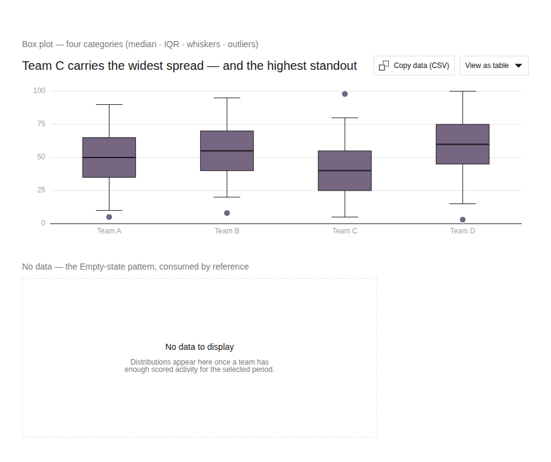
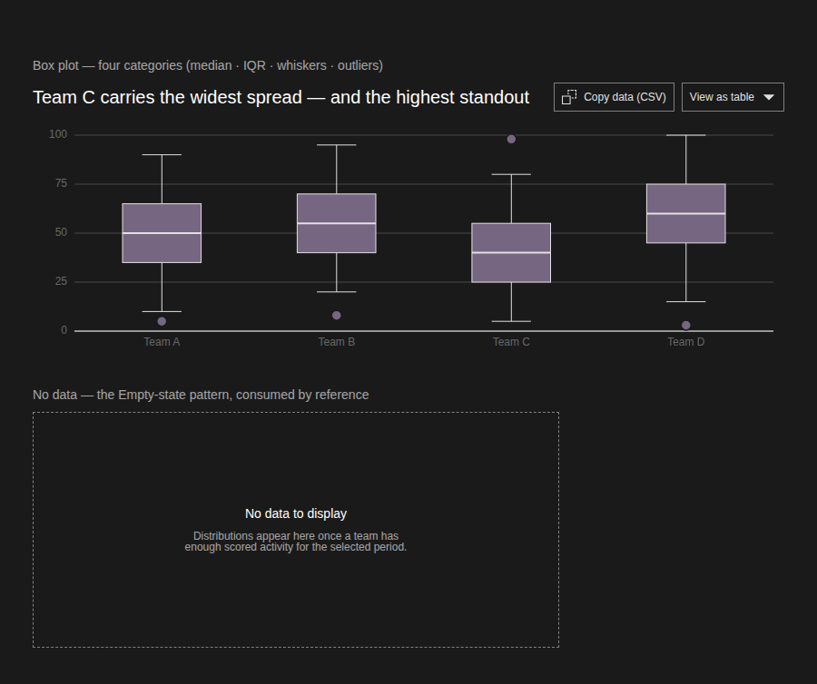
Does the quiet grid stand, or should the gridlines darken to meet 3:1?
Recommended: the quiet grid stands. Gridlines are a reading aid; the axis labels and the boxes carry the data, and 3:1 is for things you must see to understand the chart.
notes/_subreports/2026-10-01-313-A2.md § Ruling-shaped questions 1–3. Rulings s307-D58 and s307-D60 built; s307-D59 the cap in part. The stagger is dv-render-bar.js's 45ms per-rect animation-delay; the cure (+478 bytes) was built and reverted against 7 bytes left on Chart-combo's page; row W-313ac (A2's W-313a2c). Series values from knowledge/canon/canon.css lines 401–405; --data-axis-color: #626262 line 411. There is no --data-series-6.notes/_subreports/2026-10-01-313-AC4-wave3.md); B5b's row 11 boxplot patch. The gate's figures: 1.31:1 light, 1.90:1 dark. Figures are cloud renders of knowledge/snippets/Chart-boxplot.reference.html.12–14 · The components that settled · three calls
Nine component rows were settled tonight within your rules. Three could not be settled without you.
Your toast answer said "at once only for errors". The toast has no error kind: errors are meant to stay on screen, so they go to the alert, which already announces at once. Is that right, or should the toast gain an error kind?
Recommended: right as it is. An error that vanishes on a timer is an error the person may miss.
The corner generator now runs in every build. When a corner token does not match what the derivation says it should be, should that stop the build, or keep warning as it does today?
Recommended: stop the build. You chose the token for corners tonight, so a corner that disagrees with its own derivation is a defect, not a note.
Mono's dark caption chord was not built tonight: its one home writes a file that, regenerated now, would bake the nav family in as a tile group, which you ruled against this afternoon. Fine to build the nav frame first and the chord after?
Recommended: yes, frame first. Building the chord now would bake in the reading you ruled against.
notes/_subreports/2026-10-01-313-A5.md § Ruling-shaped questions 1–3. Call 12: W-307qx, s307-D54; Toast's region is role="status" aria-live="polite" from load, errors persist in Alert role="alert". Call 13: W-307ql, s307-D44; gen_radius_derive.py --check is BLOCKING, --assert-mint ADVISORY in _build_all.py. Call 14: W-307qh, s307-D37; the chord is one data line in gen_bento_matrix_217.py; a fresh --rails differs from disk by the #261 nav family counted as a tile group (R6d/R6e); s313-D21 is "frame, not a tile group"; the bento-matrix selftest is also red on C4i, C4k, C4f, C8c (row W-313n3).15–16 · The pack · two calls
You said the showroom's focus ring "should only be triggered by tabbing not clicks or taps". Tonight's build covers the showroom's own control bar. Should the same apply inside the library's components themselves, in every showroom pane and on the library index?
Recommended: the components too. A ring that appears on click is the same noise inside a part as on the chrome, and the browser already tells the two apart.
You kept the canon gallery. Regenerated, it no longer shows the twelve page templates, because two of them bring their own page styles and broke the compose check. Is a component-only gallery what you want to keep?
Recommended: yes, components only. The templates have their own pages, and two of them cannot sit in a shared gallery without breaking its check.
notes/_subreports/2026-10-01-313-A6.md § Ruling-shaped questions. Call 15: s313-D45, knowledge/gen_showroom.py; canon has 18 rules with a bare :focus, most outline:none on text inputs; the mechanism is :focus-visible. Call 16: s313-D46, knowledge/gen_gallery.py and _validate_compose.py; the two templates with page styles are named in the report.17–18 · The square-corner token · two calls
The token binds the corners where two controls are joined. Three names were weighed. The second call is a gate change made on the back of your answer, stated so you can overrule it.
What is the token called?
Recommended: join. It names the job, the corners where two controls meet, the way the other radius tokens name a role, and it stays true if a theme ever softens those corners.
Until tonight the gate only warned when one corner was a plain zero beside corners that use tokens. Your choice of a token over a bare zero was read as answering that question too, and the gate now refuses it. Does that stand?
Recommended: it stands. You chose a token over a bare zero, and the gate now says the same thing.
notes/_subreports/2026-10-01-313-B4.md § Ruling-shaped questions 1–2; merged with AC4's "Left for Dave" and P-plan § 4. Ruling s313-D43 ("its name is yours"). Placeholder border-radius.provisional-square; the rename is one pass over tokens/layout.json, Split-button.reference.html, split-button.meta.json, then the regen (row W-313bd, B4's W-313b4b). Call 18: CORNER_ARM_STRICT = True in the radius gate; the revert is one line.19 · Five parts rebuilt tonight · one call, by eye
Each is a mechanical change on a rule you already gave. Cloud renders, fallback face: the shapes are right, the type is not the house face. The seat renders them in four themes tomorrow.
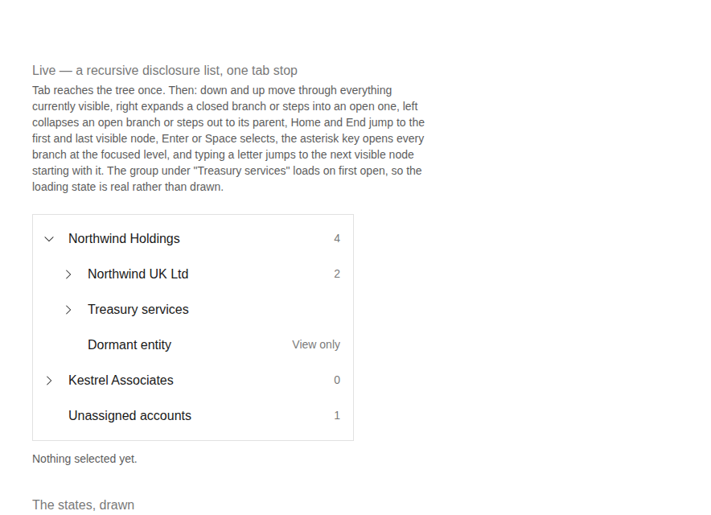
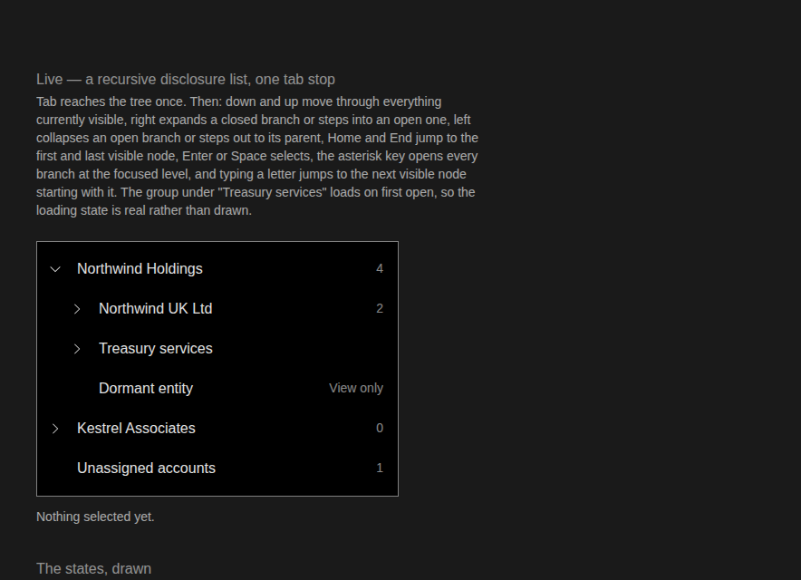
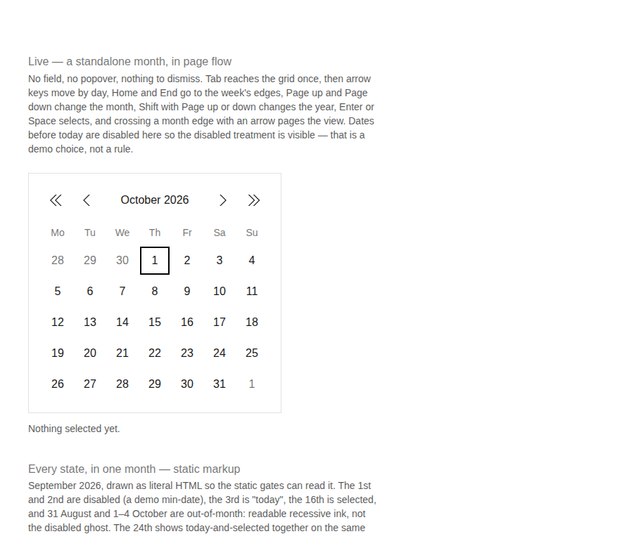
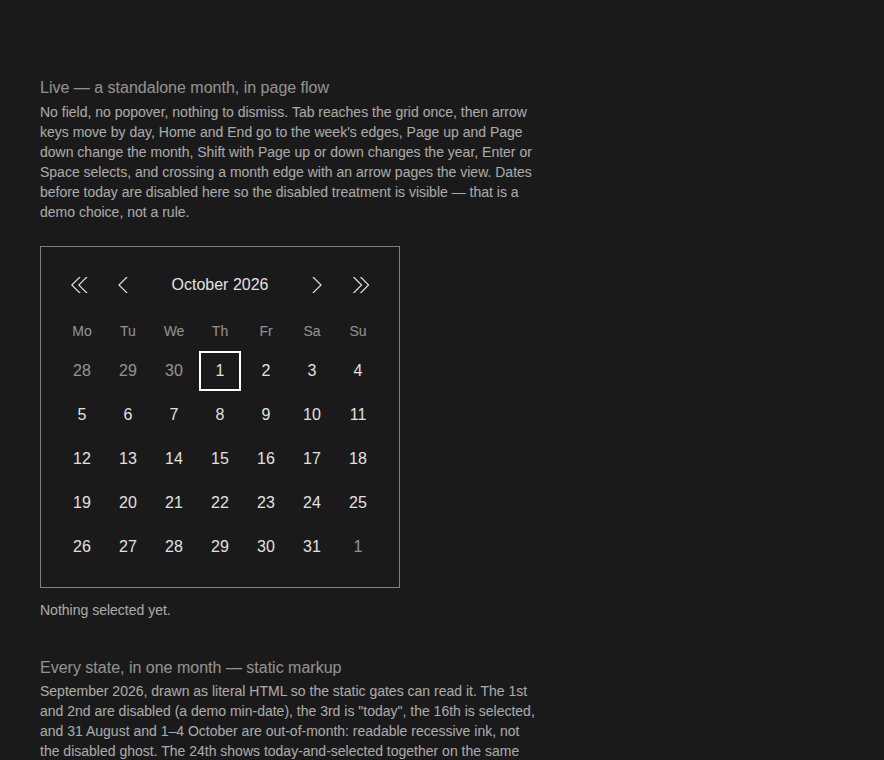
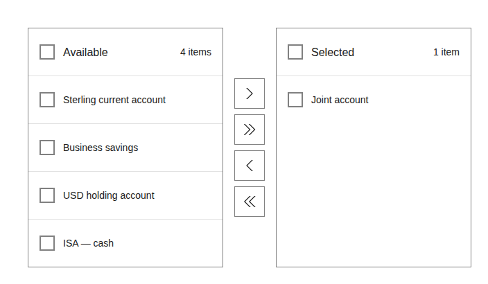
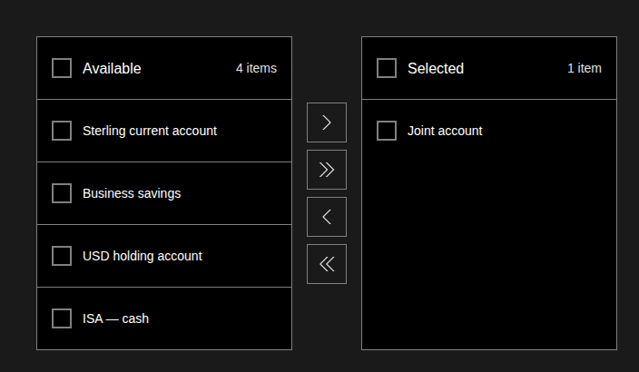
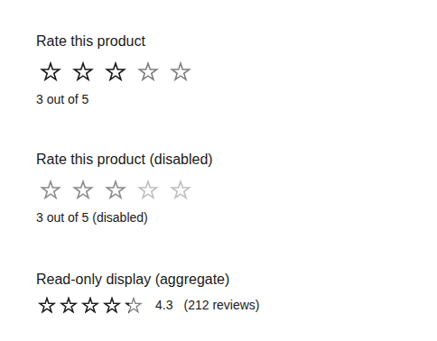
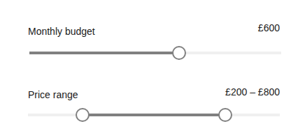
Do these five pass your eye, pending the seat's render in the house face?
Recommended: all five pass, confirmed on the seat's render. The changes are a mark, a ring, a second path, a star and a second handle, and the face does not change any of them.
notes/_subreports/2026-10-01-313-B123.md: tree mark W-308i1 (s308-D2), today ring W-308i2 (s308-D3), transfer list W-308i6 (s308-D8), rating W-308i5, slider double type (its meta merge drafted at notes/_lanes/313/B123/slider-double-merge.json). Renders by notes/_lanes/313/Q/shots.py from knowledge/snippets/{Tree,Calendar,Transfer-list,Rating,Slider}.reference.html at 900px, light and dark, cropped to content (tree and calendar to their first specimen). The seat's four-theme render is lane BV's, 07:30.20 · The token-fork ledger · one call
The fork ledger lists every place a token's value splits by theme or mode in a way that was not meant. Three rows, the three disabled tokens for border, fill and text, now describe a plain theme-and-mode split that is meant. The reconcile step says the change is yours, so they were left in.
Prune the three rows, or keep them listed?
Recommended: prune them. A ledger row the tree no longer disagrees with is noise that hides the next real fork.
21–22 · Launchpad · two calls
When a slot says what it takes by a capability word, a brand mark, navigation, a trend line, should every part declare which of those words it offers, so the gate can check the fit? Today only the wall's tiles and the data grid's filters can be checked, because they ask by kind of part or by tier. Everything else is passed as unmeasured.
Recommended: yes. A slot that asks for navigation and cannot check it is a rule that is not a rule.
A headline figure with a trend line used to be its own tile with its own data shape: one measure, its change, and a series. Since the tiles became one Metric, no part accepts that shape, so a screen asking for it gets nothing. Should Metric's rule take the shape as well, or should the shape be retired, so the trend line is decided only by whether a series exists?
Recommended: retire the shape. You made the two tiles one Metric, and a shape only the old tile answered is the old tile's ghost.
notes/_subreports/2026-10-01-313-C3.md § Ruling-shaped questions; S6 unmeasured for the worked example's brand and primaryNav slots; only provides and tier are decisive; s313-D41 is pinned by a bite (the gate refuses a fifth kind of tile).notes/_subreports/2026-10-01-313-C4.md § Found, not fixed and § questions: one-measure × value-delta-and-series has no owner since metric's gate reads one-measure × value-and-delta; the spec's alias rule (the series decides the spark) passes W3b. Whether the shape stays in shapes.json is the metas' owner's question too.23–25 · Your own open items from this afternoon · three calls
None of these needs an answer tonight. Each has a hold option so the item stays yours and open.
"I do have a nav strategy worked out in a sigma file, inscribe for now but I will revist if this doesnt match with the doc."Your comment on call 5 of the pictures page, Thursday 1 October, 17:49
Tabs in the page-header lock-up are inscribed for now as the home of the third level, and you said your own preference was a simple side nav at this point. Have you checked it against the doc?
Recommended: hold until checked. Your word was to revisit, and nothing tonight changes the recommendation you took.
"I think this is something we might have to think through."Your comment on call 8 of the pictures page, on lists with a natural order such as transactions by date
Transactions arrive in date order without anyone sorting them. Is that still a list under your rule that a toolbar does not change the shape, or does an assumed order make it something else?
Recommended: still a list. The order arrives with the data; it is not a control the person operates, so it is not even a toolbar.
"this is one component that I want to work on in the future its quite fussy at the moment"Your comment on call 9 of the pictures page
The lock-up now has a foot for the tab strip, as you chose for now. Park the rework as future work, or brief it now?
Recommended: park it. You called it future work, and the foot you chose tonight is the only change it needs now. If you can say in a line what is fussy, the comment box keeps it for the brief.
notes/_subreports/2026-10-01-313-AC3-inscription.md § 3: rows W-313d1 (third level, s313-D24), W-313d2 (natural order, s313-D27), W-313d3 (lock-up, s313-D28), owner dave, close conditions in his words. W-313d4 (switch, checkbox, radio, chip) is on the seven-trees page above and is not repeated here. Quotes are verbatim from notes/_lanes/313/DAVE-RULINGS-2026-10-01-1749-pictures-you-are-owed.md.inFamily verb (carried as unread, like every other unread edge type); the running balance and the tag (on the two-list-rows page); Launchpad's place (on the Assembly and Studio page).